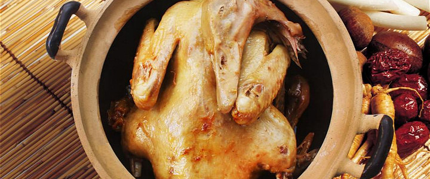

沙茶面
沙茶原作沙嗲，因有辣味，故称沙茶辣。上世纪初由华侨从东南亚传入福建。该面色泽红亮、口味咸鲜香辣，同时充满海鲜的味道，成为厦门小吃的代名词，外来游客追捧的厦门最具特色的风味小吃。
海蛎煎
海蛎煎又称蚵仔煎，是闽南地区特有的小吃。据传郑军与荷兰军队交战，缺粮之馀，郑将蚵仔、番薯粉混合加水煎成饼吃，后竟成了风靡全省的小吃。海蛎煎口感香脆，内馅香滑，蘸上各种酱更好吃。
烧肉粽
烧肉粽的特点在于一个烧，非趁热吃不可。制作时先把糯米浸后晾干，拌上卤汤、葱头油放锅里炒，再与红烧猪肉、生栗子搅拌均匀，用竹叶包好煮烂。煮好的粽子色泽红黄闪亮，味道香甜，油润不腻。
姜母鸭

姜母鸭可谓是美食中的药膳，起源于泉州，有咸、淡、辣三种口味。老姜要高山种植1年以上，鸭子要养足100天以上的散养正番鸭。焖在砂锅里的鸭肉炖的很烂，带着老姜的清香，细腻绵长。
同安封肉
厦门美食的三宝之一，据传是为纪念王审知被敕封为闽王而创制的食物，曾登上舌尖上的中国。将整块肉配上佐料装进盆中，加盖入笼蒸熟，上桌才能掀盖，故曰封肉。肉皮吹弹可破，肥而不腻。